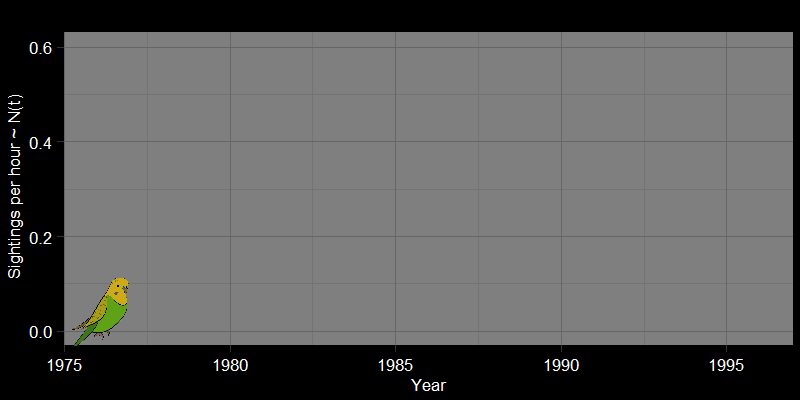

Fundamental Models and Concepts in Ecology
Introduction
Course motivation
Words
The basics of modeling a population
The role of mathematics in ecology
In the most general sense,
\[ \underbrace{N_{t+1}}_{\text{Abundance at next time step}} = \underbrace{N_{t}}_{\text{Abundance at previous time step}} + \underbrace{\underbrace{B}_{\text{Total number of births}} - \underbrace{D}_{\text{Total number of deaths}}}_{\text{Within-population processes}} + \underbrace{\underbrace{I}_{\text{Total number of immigrants}} - \underbrace{E}_{\text{Total number of emmigrants}}}_{\text{External population processes}} + \] Words
Density-independent growth
On the nature of growth
Why did we feel the need to perform lockdowns during the COVID19 pandemic? What do we fear when an “exotic” species is introduced to an ecosystem? There are several answers to these questions, but many of our worries could be summarized by a simple phenomenon: exponential growth (or geometric growth, which is essentially the same thing). Put simply, geometric and exponential growth refer to when a population grows unbounded, always increasing at a rate proportional to its population size. We often call this “density-independent” growth because the
The nature of exponential growth
Text
\[ \underbrace{N_{t+1}}_{\text{Abundance at next time step}} = \underbrace{N_{t}}_{\text{Abundance at previous time step}} + \underbrace{B}_{\text{Total number of births}} - \underbrace{D}_{\text{Total number of deaths}} \]
Parakeet Invasion
Text

COVID-19 in New York City
Text
Growth in variable environments
Follow-up question
Density-dependent growth
Populations cannot grow forever. In principle, this is because population growth requires resources.
What limits population growth?
Logistic growth
Most
However, I find that it is often presented uncritically.
The density wars:
“[a] long-running verbal debate, reminiscent of medieval scholasticism”/summary>
Thus, the real crux of the question wasn’t
Populations fluctuate. In contrast to a model such as the
More along the lines of “is most population change we see attributable to some kind of density-dependent factor? Or (in essence), does most population change reflect randomness and \(r\) changing through time?”.
The logistic map: the end of the debate
In my view, the debate wasn’t completely resolved, but the
The logistic map: the end of the debate
In my view, the debate wasn’t completely resolved, but the
Predator-prey interactions
Cool quote yay
Introduction
We begin today with a riddle that gives some surprising insights into the history of theory ecology:
What do sharks and machine guns have in common?
Words